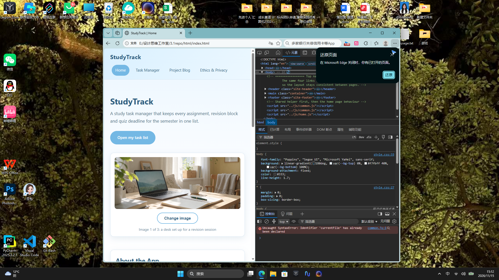
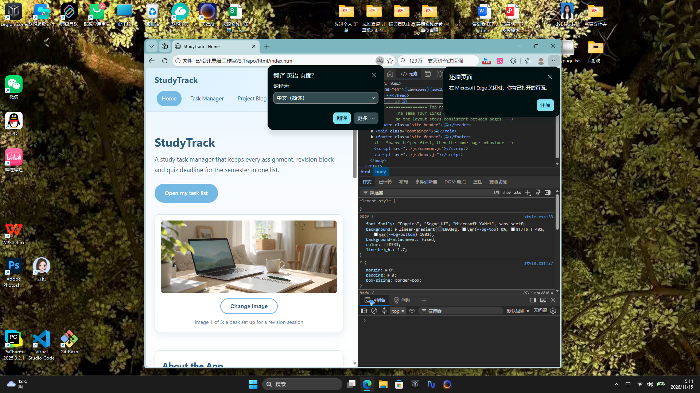
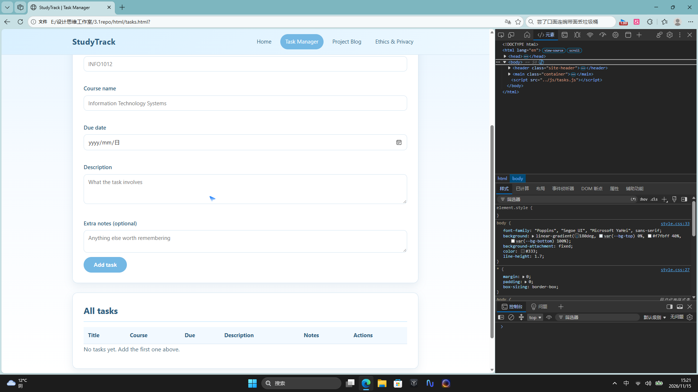

Project Blog
A record of how StudyTrack was planned with Agile, and the two bugs that took the longest to find.
1. Agile methodology and how it applied to this project
What Agile is
Agile is a way of building software in small increments instead of writing the whole product before testing any of it. The approach was formalised in the Agile Manifesto (2001), which places four things above their alternatives: working software over comprehensive documentation, responding to change over following a plan, collaboration over contract negotiation, and individuals over processes and tools. The point is not that the right hand column has no value, but that the left hand column has more value.
Agile is delivered through short cycles called sprints. A sprint is a fixed length of work that ends with a usable increment. Each sprint follows the same shape: Planning chooses what to build from a prioritised backlog, Analysis works out what the requirement really means, Design decides the structure, Implementation writes the code, and Testing and Maintenance checks the increment and fixes what broke. A sprint review asks whether the increment is usable, and a retrospective asks what the process should change next time. Scrum, Kanban and Extreme Programming are all specific ways of running these cycles.
Why it suited a three week web project
The assessment set out four pages in a fixed order, and each page could be checked in a browser before the next one started. That is the same shape as a backlog being worked off in sprints. Agile also fit because the requirements arrived as a long list of small points: colours, navigation, a login gate, a confirmation dialog, a live clock. Working in increments meant each point could be marked off individually, rather than discovered to be missing at the end.
How I applied it here
I treated the numbered assessment requirements as a product backlog: every point became a task, ordered by weight, so the 40% HTML and CSS items came before the blog and ethics pages. I ran three one-week sprints, each ending with a working site in the browser, then used the sprint review to test the increment against the brief, found bugs, and fixed them before adding the next page. The retrospective step happened informally: after each sprint I listed what had cost me the most time, which is where both bugs below come from.
2. Three week sprint plan
| Sprint | Planning | Analysis | Design | Implementation | Testing and Maintenance |
|---|---|---|---|---|---|
| Week 1 Sprint 1 |
Take the 2.2.1 requirements and turn them into a task list. Decide the page order and the four navigation links. | Work out what "About the App" and "About Me" must contain, and how many images are required. | Choose the layout on paper: header with logo and links, a hero with one image, then stacked white cards. Pick the colour palette from my portfolio site. | Create the repository and folder structure. Build index.html, style.css, home.js with the image cycle. | Open the site in the browser, check the console, test the image button. Fix the broken script path and the missing image files before moving on. |
| Week 2 Sprint 2 |
Break 2.2.2 into login, create, update, delete, read and validation, and order them so each one can be tested alone. | Decide where tasks are stored, what a task record must contain, and which fields are required. | Design the two-state page: login card first, task area hidden until sign in. Form on top, table below, clock in the footer. | Build the login gate, then the task form, table, edit mode, delete confirmation, validation messages and the live clock. | Run the validation cases: empty fields, impossible date, overdue task. Confirm edit does not create a duplicate row and that delete asks first. |
| Week 3 Sprint 3 |
Plan the blog and the ethics page, then the README and the submission package. | Read the Agile brief, decide which two bugs are worth writing up, and check what the README must contain. | Design a readable blog: numbered sections, a wide sprint table that scrolls sideways, one bordered block per bug. | Write blog.html, ethics.html, the README, then prepare the repository for submission. | Test in a second browser, check every internal link, confirm all images load, export the ZIP and submit. |
3. Two development errors
Bug 1: the script was loaded twice and the page stopped running
Date and time it appeared: 15 November 2026,
14:55
Symptom: after tidying up the script tags on
the home page, the image button stopped working and the
console showed the error below.

The code that caused it - the same file included twice:
<script src="../js/common.js"></script> <script src="../js/common.js"></script> <script src="../js/home.js"></script>
Date and time it was fixed: 15 November 2026, 15:05

The corrected code - one include only:
<script src="../js/common.js"></script> <script src="../js/home.js"></script>
Explanation. common.js declares
const currentFile and const navLinks.
Loading the file a second time runs those declarations again
in the same global scope, and a const can only
be declared once. The browser therefore threw a
SyntaxError and abandoned the rest of the script,
which also killed the button listener that home.js was
supposed to attach. The cause was a copy and paste mistake
while reorganising the script tags: I pasted the helper line
twice and did not read the console before assuming the
JavaScript itself was broken. To find it I opened the console,
read the file name and line number in the message, and matched
the variable back to common.js. The fix was to delete the
duplicate line. A side effect worth knowing: a cancelled script
does not roll back, so the second home.js listener was never
registered either.
Resources used: MDN, "SyntaxError: redeclaration
of non-configurable global property";
Microsoft Edge DevTools console documentation.
Bug 2: the form submitted for real and wiped everything
Date and time it appeared: 15 November 2026,
15:30
Symptom: pressing "Add task" reloaded the page,
the task never appeared in the table, and the fields were
cleared. Nothing was written to storage.

The code that caused it - no call to preventDefault:
function handleTaskSubmit(event) {
// Missing: event.preventDefault()
if (!validateForm()) {
return;
}
tasks.push({ title: taskTitle.value.trim() });
saveTasks();
}
Date and time it was fixed: 15 November 2026, 15:38
The corrected code - the default action is cancelled first:
function handleTaskSubmit(event) {
// Stop the browser submitting the form and reloading the page.
event.preventDefault();
if (!validateForm()) {
return;
}
tasks.push({ title: taskTitle.value.trim() });
saveTasks();
}
Explanation. A <form> without
action still has a default behaviour: on submit the
browser navigates to the current URL and rebuilds the document
from scratch. Every variable in JavaScript, including the
tasks array that had just been updated, is thrown
away at that moment, and that is why the task vanished even
though the code that added it had already run. It also made the
bug look like a storage problem when it was really a navigation
problem. The fix is a single line,
event.preventDefault(), called before anything else
so the handler owns the submit. I found the cause by watching the
request panel in DevTools: a document request fired every time
the button was pressed, which is a form submission, not
JavaScript. Since fixing it I have kept the handler short and put
the cancel first, so it cannot be forgotten behind an early
return.
Resources used: MDN, "Event.preventDefault()" and
"HTMLFormElement: submit event"; MDN, "Sending form data".